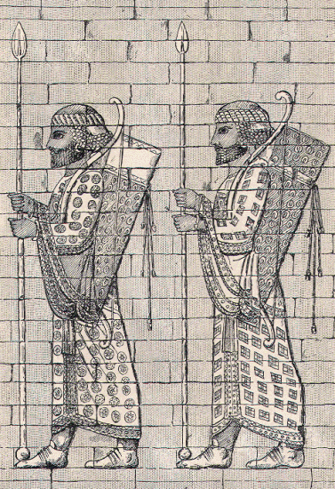

On the next day Clearchus returned to the camp, and reported the good understanding that he had established with Tissaphernes. But when he said that Tissaphernes wished all the officers to assemble in his tent, the Hellenes objected, for they did not trust the Satrap, and did not care to let their best men run any risk of falling into his clutches.
Clearchus however was so confident that all would go well, and pressed his opinion with such persistence, that after a long discussion it was at last decided to send five generals and twenty captains to take part in the conference. Clearchus was of course one of the five generals, so also was Menon. They were accompanied by two hundred soldiers who wished to buy provisions in the Barbarian camp, but all were unarmed, for it was to be a friendly meeting.
Some hours passed by, and the Hellenes did not return. Those who were left behind began to look out anxiously for their comrades, but they could see nothing but a number of Persian horsemen galloping about separately in all directions upon the heath, which lay between the two camps. They did not understand what this could mean, but soon the horrible explanation was brought to them by a badly-wounded Hellene, who made his way back to the camp as fast as he was able, and told them what had happened.
On reaching the tent of Tissaphernes, the five generals had been invited to go within; the captains were left standing at the door. Presently a blood-red flag was hoisted above the tent, and at this signal, the Barbarians fell upon the captains and the two hundred soldiers who were all unarmed, and massacred them. Those who attempted to flee were cut down by horsemen sent in pursuit of them, and killed upon the heath. Of the fate of the generals who had gone within the tent, the wounded man knew nothing.
On hearing this terrible news, the Hellenes rushed to seize their arms, for they naturally expected an immediate attack. This did not however take place, but Ariaeus, with some other nobles, and about three hundred Persian cavalry, rode towards the camp, and demanded to speak with one of the generals. When he was within hearing, Ariaeus cried out, "Clearchus was a traitor, he had broken the oath, and has been punished. To you I bring an order from the Great King to deliver up your arms, for they belonged to Cyrus, who was his slave." Every one in the Persian empire was considered a slave, except the King himself.
But one of the generals answered with spirit befitting the occasion. "Thou miserable Ariaeus," he cried, "and you others who were the friends of Cyrus, you are the most wicked of men, you who formerly swore that our friends should be your friends, and our enemies your enemies, and have now entered into a covenant with the godless Tissaphernes to destroy us."
To this the Persians could make no reply, and they turned back to their own camp.
The night that followed was a terrible one for the Hellenes. The infamous crime that had been committed could only be regarded as the first of a series planned long ago by Tissaphernes. Now that Clearchus was gone, who was to command the little band of Hellenes, left as sheep without a shepherd? If the treacherous Barbarians were bent upon their destruction, what was to hinder them from taking them by surprise again and again, until at last they were reduced to the choice of death or slavery?
Throughout the whole camp reigned discouragement, despondency, even despair. Only a few of the soldiers could rouse themselves to take food or kindle a fire. Wherever they chanced to be, they threw themselves down upon the ground, and passed a sleepless night, kept awake by brooding care for what the next day might bring forth, and for sick longing for their country, their parents, their wives, their children, whom they feared they should never see again.

ARCHERS OF THE ROYAL BODY-GUARD.
On entering the tent of Tissaphernes, the five generals had been surprised and made prisoners, and were forthwith sent to Susa, there to await the King's pleasure. Menon was set at liberty, but the rest languished for a year in prison, and were then beheaded.
For Clearchus, who had been the most intimate friend of her dearly loved Cyrus, Parysatis, the Queen-mother, did everything in her power. Through the medium of her physician, she was able to supply him with many comforts in his prison, and she even hoped that her influence with Artaxerxes would prevail to save his life. But in Statira, the Queen-consort, she had a rival whose influence was even greater than her own. Statira succeeded in convincing her husband that it was indispensable to the dignity of the Persian throne to pass sentence of death upon the most active and distinguished adherent of the usurper Cyrus, and Clearchus was consequently executed.
Mother-in-law and daughter-in-law had long been consumed by mutual jealousy and hatred, and this last struggle filled the cup to overflowing. In order to revenge herself for the death of Clearchus, Parysatis bribed a servant to give poison to Statira, and thus caused her death. As a punishment for the murder, she was banished for a time from Babylon.
For a year Menon was at liberty, and went about as he pleased in Susa, but at the end of that time he also was executed, after having been cruelly tortured. The freedom that he enjoyed at first seems to prove that, as Clearchus suspected, he had really rendered some service to the Great King, to the disadvantage of his countrymen. And his subsequent death shows that, cunning as he was, he was not cunning enough to provide against all contingencies. It is very possible that here also the influence of Parysatis may have been at work.